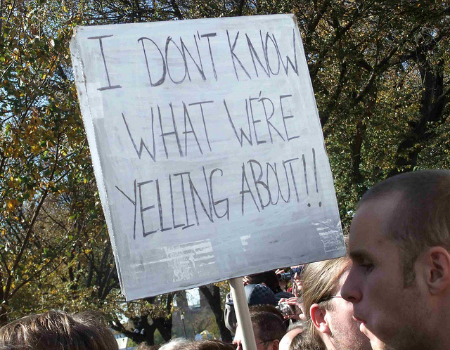
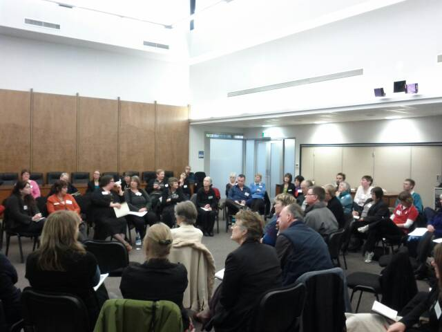

Yes, but what have you done for me lately?
Who am I?
Kai Tahu, Kati Mamoe, Waitaha
BSc Compsci, BA Maths and Māori Studies
One of the original Koha developers
Working at Catalyst IT
One of the QA team for 3.14 release
So I got Koha
cc-by-nc-sa Colin Fahrion
Freedom isn't free
222 - person years
218 developers over 14.5 years
10,835,325 lines (including translations)
20,979 commits averaging 4.1 for every day .. and that's 5,073 days
It costs a buck 'o five
How can I give back
Speak up
Get involved in the community
Encourage freedom
Sponsor developments
Test, test, test
. . .
Give me cookies
Speak up

cc-by Martha Soukup
Get involved

cc-by Elizabeth Lloyd
←
→
/
Go to slide:
#